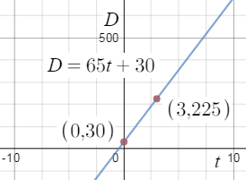

MAT-101: Set 3C-Linear Models
Objectives:
- Determine the slope of a given linear model and describe its meaning, in context.
- Use a given linear model to solve problems.
- Create a linear model from data to solve problems.
Linear Models
Now that you have an understanding of lines, we will consider linear models. A linear model is an equation for a line that is connected to a real-world situation or data. What does this mean?
Recall when we write the equation for a line:
\[y=mx+b\]
that \(y\) represents the dependent variable (sometimes called the "response" variable) and \(x\) represents the independent variable (sometimes called the "predictor"). Plugging in a particular value of \(x\) gives, or "predicts," a corresponding value for the response \(y\). The value of the slope \(m\) of the line represents the estimated change in the response variable \(y\) for a one-unit change in the predictor variable \(x\). Finally, the value of \(b\) (the \(y\)-intercept ) is the value of the response \(y\) when the predictor \(x\) is zero. To summarize:
- \(y\) is the response variable (it responds to changes in \(x\))
- \(x\) is the predictor variable
- \(m\) represents the estimated change in the response \(y\) for a one-unit change in the predictor \(x\)
- \(b\) is the value of the response \(y\) when the predictor \(x=0\)
Recall that points in the plane are denoted \( (x,y)=(independent, dependent) =(predictor, response).\) Consider some examples of linear models.
Example 3C-1 (a): Determine Slope and Intercept of Given Model
Suppose you are driving from Caldwell to LaGrande, OR to watch the Yotes play a game against Eastern Oregon University. When you reach Ontario, OR (which is 30 miles into the drive) you are able to set your cruise control at 65 miles per hour (mph) for the remainder of the trip. The linear function \(D=65t + 30\) represents your distance from Caldwell \(t\) hours after turning on the cruise control. Notice when \(t=0\), your distance \(D=30\) which corresponds to you being 30 miles from Caldwell (and in Ontario).
| Determine the slope and intercept for the model. |
Recognize the model as a line in slope-intercept form
\(y=mx+b\) |
| \(D=65t+30\) |
The response is \(D=\) your distance from Caldwell,
the predictor is \(t=\) the time you have had the cruise on |
| slope \(=65\)
intercept \(=30\) |
Our Solution |
Example 3C-1 (b): Slope in Context
Continue with the linear model \(D=65t + 30\) representing your distance \(D\) (in miles) from Caldwell \(t\) hours after cruise. Describe what the slope means.
| \(m=65\) mph is positive |
Recall slope is \(\dfrac{\text{rise}}{\text{run}}=\frac{\text{change in } D\text{ miles}}{\text{change in } t\text{ hour}}\) |
| Your distance increases
at a rate of \(65\) miles for each hour using cruise |
Describe in context |
| For each additional hour driving using cruise
the model predicts you will travel an additional \(65\) miles |
Our Solution for an additional hour |
| For an additional \(2\) hours driving using cruise
the model predicts you will travel an additional \((65)(2) = 130\) miles |
Our Solution for an additional \(2\) hours |
Example 3C-1 (c): Solve for a Predictor Given a Response
Continue with the linear model \(D=65t + 30\) representing your distance \(D\) (in miles) from Caldwell \(t\) hours after using cruise. How many hours after setting your cruise control will you be \(225\) miles from Caldwell?
| \(D=\) distance from Caldwell |
Recall what the response variable represents |
| When is \(225=D\)? |
Write an equation to model the problem |
| \(225=65t+30\) |
This is an equation to model the problem.
Solve for \(t\): subtract \(30\) from both sides |
| \(195=65t\) |
Divide both sides by \(65\) |
| \(3=t\) |
State what this means in context |
| After \(t=3\) hours of cruise control
you are \(225\) miles from Caldwell |
Our solution |
| The graph of the linear model demonstrates the
\(D\)-intercept of \(30\) miles,
increasing slope of \(65\) mph and
distance of \(225\)miles when the time is \(3\) hours. |
 |
Example 3C-2 (a): Determine Slope and Intercept of Given Model
A study of king penguins looked for a relationship between how deep the penguins dive to seek food and how long they stay underwater. The data from the study produced the linear model \(DD = 0.0072D + 3\), where \(DD\) represents the dive duration in minutes (min) and \(D\) represents the depth in meters (m).
| Determine the slope and intercept for the model. |
Recognize the model as a line in slope-intercept form \(y=mx+b\). |
| \(DD = 0.0072D + 3\) |
The response is \(DD\) the dive duration (min),
the predictor is \(D\) the depth (m) |
| slope\(=0.0072 \)
intercept \(= 3\) |
Our Solution |
Example 3C-2 (b): Slope in Context
Continue with the linear model \(DD = 0.0072D + 3\), where \(DD\) represents the dive duration in minutes (min) and \(D\) represents the depth in meters (m). Describe what the slope means.
| \(m=0.0072\) min/m is positive |
Recall slope is \(\dfrac{\text{rise}}{\text{run}}=\frac{\text{change in } DD \text{ min}}{\text{change in } D\text{ m}}\) |
| The dive duration increases
at a rate of \(0.0072\) minute for each additional meter in depth |
Describe in context |
| For each additional meter in diving depth the model predicts
a penguin remains under water an additional \(.0072\) minute |
Our Solution for an additional meter |
| For an additional \(100\) meters in diving depth the model predicts
a penguin remains under water an additional \((0.0072)(100) = 0.72\) minute
or about \((0.72)(60)\approx 43 \) seconds |
Our Solution for an additional \(100\) meters |
Example 3C-2 (c): Determine Response Given a Predictor
Continue with the linear model \(DD = 0.0072D + 3\), where \(DD\) represents the dive duration in minutes (min) and \(D\) represents the depth in meters (m). According to the model, how long does a typical dive to a depth of \(300\) meters last?
| \(DD=\) dive duration |
Recall what the response variable represents |
| \(D=\) depth |
Recall what the predictor variable represents |
| \(D=300\) m |
We are given a depth and asked to determine the duration for that depth |
| \(DD=0.0072(300) + 3\) |
Plug the given depth into the model and simplify |
| \(DD=5.16\) |
State what this means in context |
| The dive duration is predicted to be \(5.16\) minutes for a depth of \(300\) meters |
Our solution |
Often researchers record observations over time and use a linear model to represent the situation. Consider some examples.
Example 3C-3 (a): Data Points
In 1980, the gross domestic product (GDP) of the United States was \(3\) trillion dollars. In 1990 it was \(6\) trillion dollars. Let the predictor \(t\) denote time and the response \(GDP\) denote the GDP (in trillions). Since the first given observation is from 1980, let \(t=0\) correspond to the year 1980. Identify points that represent the data.
| \(t=\) year after 1980 |
\(GDP=\) GDP ( trillion \( \\$\)) |
| \(t=0\), \(GDP=3\) |
Corresponds to the year 1980 with a GDP of \(\$3\) trillion |
| \((0,3)\) |
Points in the plane are written \((x,y)=(predictor, response)=(t,GDP)\) |
| \(t=10\), \(GDP=6\) |
Corresponds to the year 1990 (ten years after 1980) with a GDP of \(\$6\) trillion |
| \((10,6)\) |
Points in the plane are written \((t,GDP)\) |
| \((0,3)\) and \((10,6)\) |
Our Solution |
Example 3C-3 (b): Model Data
Continue with the GDP example.
Determine a linear model for the data points \((0,3)\) and \((10,6)\).
| First determine the slope between
\((0, 3)\) and \((10,6)\) |
Identify \(t_1, GDP_1, t_2, GDP_2\) |
| \((t_1, GDP_1)\) and \((t_2,GDP_2)\) |
Use slope formula \(m=\dfrac{\text{change in }GDP}{\text{change in }time}=\dfrac{GDP_2-GDP_1}{t_2-t_1}\) |
| \(m=\dfrac{6-3}{10-0}\) |
Simplify |
| \(m=\dfrac{3}{10}=.3\) |
Now find the \(GDP\)-intercept |
| \((0,3)\) |
The first point is the value of \(GDP\) when \(t=0\)
which means \(b=3\), the \(GDP\)-intercept |
| \(GDP=0.3t+3\) |
Our solution |
Example 3C-3 (c): Solve for a Predictor Given a Response
Continue with the GDP example.
Use the linear model to determine the year when the GDP will reach \(\$13.5\) trillion.
| \(GDP=\) GDP (in trillions of dollars) |
Recall what the response variable represents |
| \(t=\) time (in years after 1980) |
Recall what the predictor variable represents |
| When will \(13.5=GDP\)? |
Write an equation to model the problem |
| \(13.5=.3t+3\) |
This is an equation to model the problem.
Solve for \(t\): subtract \(3\) from both sides |
| \(10.5=.3t\) |
Divide both sides by \(.3\) |
| \(35=t\) |
\(t\) is years after 1980 |
| \(1980+ 35 = 2015\) |
State what this means in context |
| Using the linear model, the GDP will be
\(\$13.5\) trillion in the year 2015 |
Our solution |
Example 3C-4 (a): Data Points
An advertiser goes to a printer and is charged \(\$47\) for \(100\) copies of one flyer and \(\$63\) for \(259\) copies of another flyer. Let the predictor \(n\) denote the number of copies and the response \(C\) denote the cost. Identify points that represent the data.
| \(n=\) number of copies |
\(C=\) cost (\(\$\)) |
| \(n=100\), \(C=47\) |
Corresponds to the cost \(\$47\) for \(100\) copies |
| \((100,47)\) |
Points in the plane are written \((predictor,response)=(n,C)\) |
| \(n=259\), \(C=63\) |
Corresponds to the cost \(\$63\) for \(259\) copies |
| \((259,63)\) |
Points in the plane are written \((n,C)\) |
| \((100,47)\) and \((259,63)\) |
Our Solution |
Example 3C-4 (b): Model Data
Continue with the copies example.
Determine a linear model for the data points \((100,47)\) and \((259,63)\).
| First determine the slope between
\((100, 47)\) and \((259,63)\) |
Identify \(n_1, C_1, n_2, C_2\) |
| \((n_1, C_1)\) and \((n_2,C_2)\) |
Use slope formula \(m=\dfrac{C_2-C_1}{n_2-n_1}\) |
| \(m=\dfrac{63-47}{259-100}\) |
Simplify |
| slope \(=m=\dfrac{16}{159}\) |
Now find the \(C\)-intercept, \(b\) |
| \(C=\dfrac{16}{159}n+b\) |
Choose one of the points to plug into the line |
| \((100,47)\) |
\((n,C)\), plug the corresponding values in for \(n\) and \(C\) |
| \(47=\dfrac{16}{159}(100)+b\) |
Simplify |
| \(47=\dfrac{1600}{159}+b\) |
Subtract \(\dfrac{1600}{159}\) from both sides |
| \(47-\dfrac{1600}{159}=b\)
or \(b\approx 36.9371 \) |
Write the equation with the derived \(m\) and \(b\) |
| \(C=\dfrac{16}{159}n+36.9371\) |
Our solution
It is generally a good idea to maintain \(3\) to \(5\) decimals of accuracy when submitting answers in WeBWorK
|